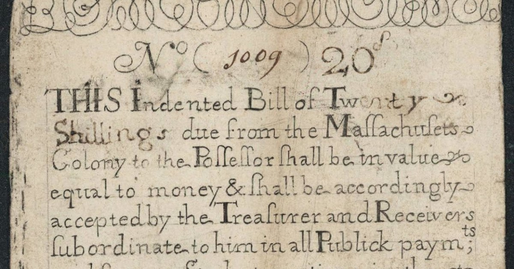
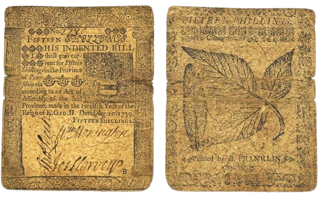
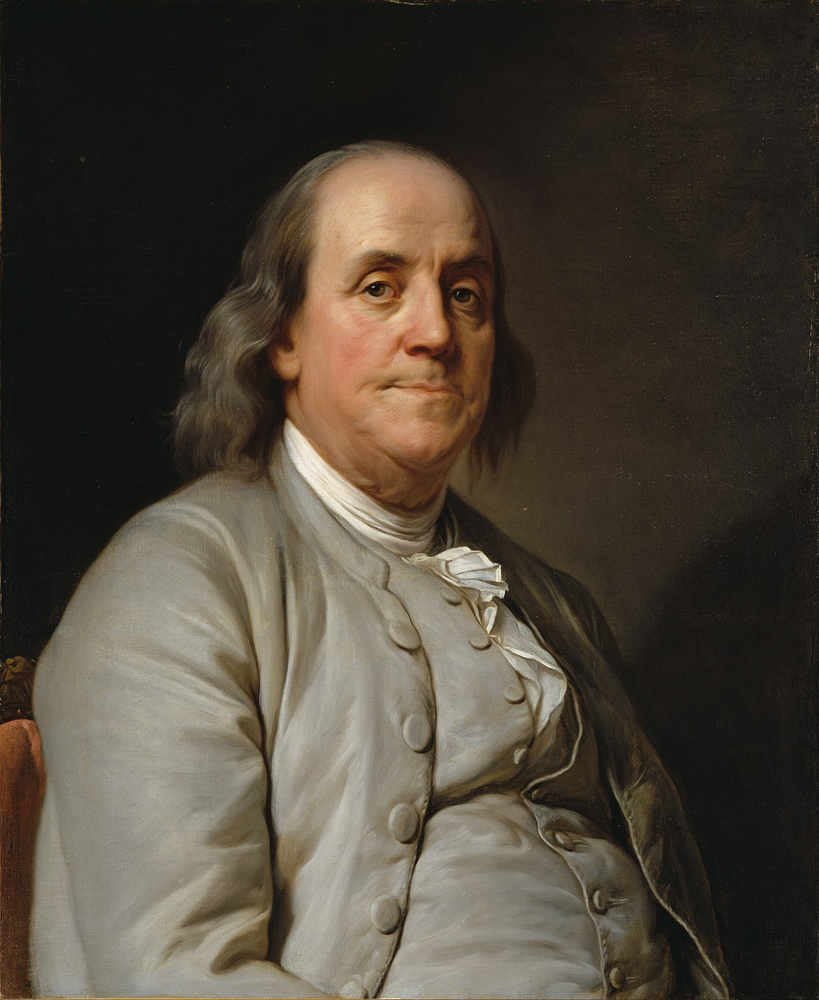
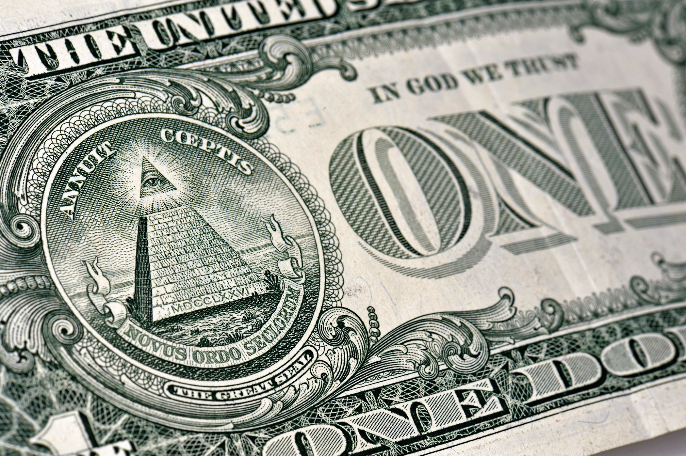

| |
 |
The colonial notes mark the birth of currency in the United States
In 1690, the colonies of the United States did not have metal coin to use for their currency. Therefore they produced paper money to use for their system of currency. These notes were reffered to as "bills of credit" meaning tSchey could be exchanged for the silver coin used in Great Britain. However this system of notes would not be worth much shortly after development due to the colonies producing too much of the note. The currency outweighed the silver coin in Britain making it useless.
|  |  |
Benjamin Franklin's Dive into Paper Money
1739, Benjamin Franklin began using his printing firm, based in Philadelphia. He included unique nature-like markings in order ensure it could not be replicated. He was able to use the actual prints of leafs, making it nearly impossible for one to make a counterfit.
The Funding of the Revolutionary War
Continental currency is the currency that funded the United States during the Revolutionary War in 1775. Like the colonial notes in 1690, the currency lost value due to the overprinting of the bills. For five years during the War they would print 200 million worth of notes.
The Symbol We Know and Love
In 1785,the United States adopted the dollar sign. The dollar sign is in resemblence of pesos from Spanish America. This symbol would be the basis of United States currency through today.
The Finance of the Civil War
Like the continental currency during the American Revolution, Greenbacks were used for funding the Civil War (1861). Their name comes from the appearance of green ink on their backs.
Allowed for a Person to Buy Silver Without the Physical Silver
Issued between 1878-1964, silver certificates. These certificates would allow for more people to buy the silver currency. Eventually phased out in 1964, they no longer hold currency for silver as they once did.
 |
 |
Our United States Currency
The $1 bill we are used to using daily was issued in 1963. It includes George Washington's face and the dollar seal.